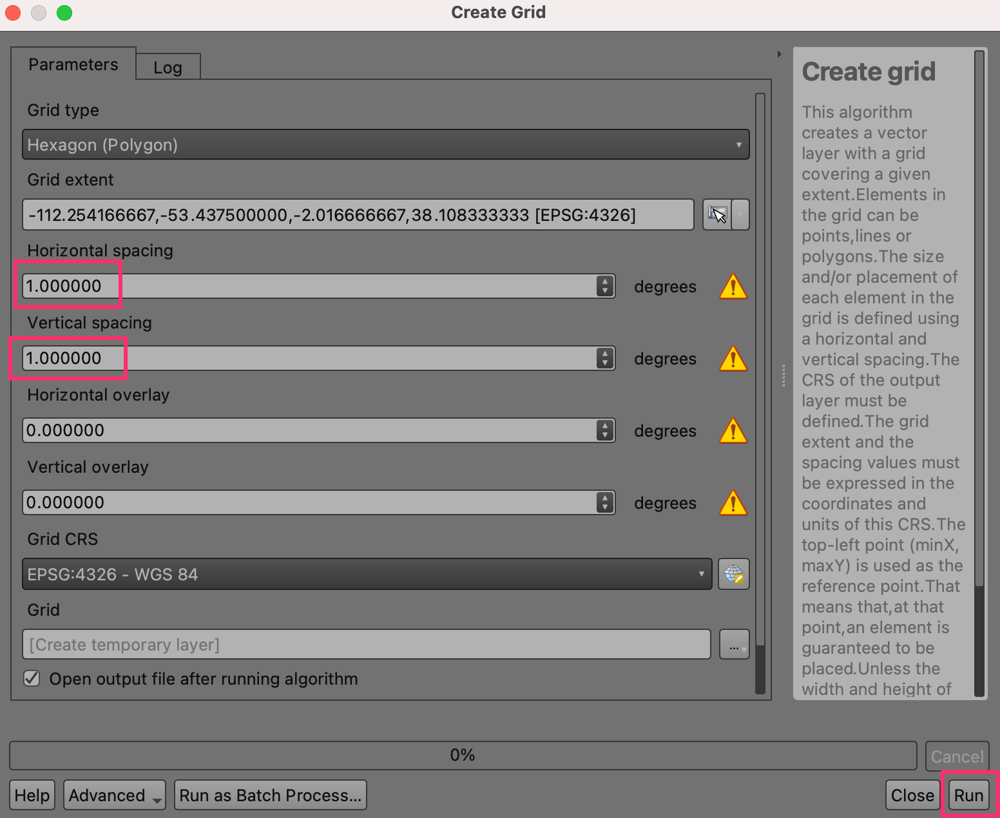
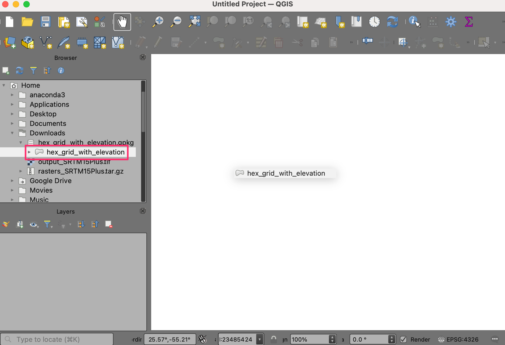

Erstellung einer Weltkarte im Gitter-Stil (QGIS3)¶
Beitrag von: Steven Kim
Im vorigen Tutorial Grundlagen für Filterung und Gestaltung mit Ausdrücken (QGIS3) haben wir gesehen, wie leicht in QGIS Ausdrücke verwendet werden können, um Daten zu filtern und die Karte zu gestalten. Wir wollen unsere Fähigkeiten erweitern, indem wir eine Weltkarte erzeugen, die Höhenwerte in Form von Sechsecken darstellt.
Überblick über die Aufgabe¶
Wir verwenden ein Gitter aus Sechsecken, welche die Höhenwerte enthalten, und nutzen eine mathematische Funktion, um eine Höhenvariable für den 2,5-D-Renderer sowie einen optionalen Ausdruck für die Anwendung eines Farbverlaufs festzulegen.

Weitere Fähigkeiten, die wir erlernen:¶
Suchen und Herunterladen von Datensätzen mit Höheninformationen
Erzeugen eines Gitters aus Sechsecken und Erstellen einer Statistik für jede Gitterzelle
Hinzufügen eines neuen Farbverlaufs in QGIS
Beschaffung der Daten¶
Unter OpenTopography haben wir Zugang zu vielen frei lizensierten Datensätzen mit Höheninformationen. Wir werden ein Digitales Höhen-Modell (DHM; engl. DEM für Digital Elevation Model) für die uns interessierende Region aus einem globalen DHM und einem ozeanographischen Tiefenmodell auswählen und herunterladen, das bei OpenTopography gehostet wird.
Wir suchen die Seite Global Bathymetry and Topography at 15 Arc Sec: SRTM15+ V2.5.5 auf der Website von OpenTopography. Es handelt sich um einen globalen Datensatz mit einer Auflösung von 500 Metern, der aus einem DHM von SRTM-Daten und verschiedenen ozeanographischen Datensätzen gewonnen wurde.

Wir scrollen bis 1. Select area of data to process nach unten, klicken auf den Button SELECT A REGION und ziehen ein Rechteck mit der uns interessierenden Region auf.

Nach Festlegen der Region scrollen wir weiter zu 2. Data Outputs Formats und wählen
GeoTiff. Die übrigen Optionen belassen wir bei den Voreinstellungen und scrollen weiter zu Job Description. Wir geben eine E-Mail-Adresse ein, um bei Bereitstellung des Downloads informiert zu werden und klicken SUBMIT.

Es kann ein paar Minuten dauern, bis der Download bereitgestellt ist. Sobald das der Fall ist, werden wir einen Link erhalten, der auf den ausgewählten Datensatz verweist. Wir laden den Datensatz auf unseren Computer. Die heruntergeladene Datei ist ein Archiv im tar-Format, das entpackt werden muss, um die Daten in QGIS öffnen zu können. Unter Windows kann ein externes Programm wie 7-Zip verwendet werden, um das Archiv zu entpacken und die Datei
output_SRTM15Plus.tifzu entnehmen.

In QGIS suchen wir die Datei
output_SRTM15Plus.tifim Browser. Per Drag & Drop ziehen wir sie in den Arbeitsbereich. Es wird ein neuer Layeroutput_SRTM15Pluszum Layer-Panel hinzugefügt.

Wir öffnen die Verarbeitungswerkzeuge mit . Wir suchen nach dem Algorithmus und öffnen ihn durch Doppelklick.

Im Dialog Gitter erzeugen wählen wir
Hexagonals Gittertyp. Wir wollen ein Gitter über die gesamte Ausdehnung des DHM erzeugen, also öffnen wir die Liste neben Gitterausdehnung und wählen .

Wenn unsere ausgewählte Region hinreichend groß ist, können wir ein Gitter von 1 Grad erzeugen. Wir wählen sowohl für Horizontaler Abstand als auch für Vertikaler Abstand
1. Für eine kleinere Region kann ein kleinerer Wert für das Gitter angemessen sein. Die anderen Optionen belassen wir bei den voreingestellten Werten und klicken Starte, um das Gitter zu erzeugen.

Dem Layer-Panel wird ein neuer Layer
Gridhinzugefügt. Wir werden jetzt die Minimum-, Maximum und Durchschnittswerte für die Höhen in jedem Polygon des Gitters ermitteln. Dazu wählen wir den LayerGrid, suchen nach dem Algorithmus in den Verarbeitungswerkzeugen und öffnen ihn durch Doppelklick.

Wir wählen
Gitterals Eingabelayer undoutput_SRTM15Plusals Rasterlayer. Wir gebendem_als Ausgabespaltenpräfix ein. Als nächstes wollen wir definieren, welche Statistik wir aus den Rasterdaten erzeugen wollen. Dazu klicken wir auf den Button … neben Zu berechnende Statistik.

Wir setzen die Optionen
Mittel,MinimumundMaximumund klicken OK. Die Ergebnisse werden wir in einer Datei speichern. Dazu klicken wir auf den Button … neben Räumliche Statistik und wählen In Datei speichern….

Wir navigieren zu einem Ordner und geben
hex_grid_with_elevationals Dateinamen ein. Wenn sichergestellt ist, dass GPKG-Dateien (*.gpkg) als Dateityp ausgewählt ist, klicken wir Speichern. Nach Konfiguration des Dialogs Zonenstatistik klicken wir Starte.

Die Verarbeitung könnte ein paar Minuten dauern, was von der Größe des Gitters abhängt. Nach Abschluss der Berechnungen wird dem Layer-Panel ein neuer Layer
hex_grid_with_elevationhinzugefügt. Es handelt sich um einen Vektorlayer mit den Attributendem_mean,dem_minunddem_max, welche die aus dem DHM berechnete Höhenstatistik enthalten.

Der Einfachheit halber kann auch eine Kopie des vorbereiteten Gitters unter folgendem Link heruntergeladen werden:
Datenquelle [OPENTOPOGRAPHY]
Arbeitsablauf¶
Wir suchen die Datei
hex_grid_with_elevation.gpkgim QGIS-Browser und erweitern sie. Wir wählen den Layerhex_grid_with_elevationund ziehen ihn in den Arbeitsbereich.

Ein neuer Layer
hex_grid_with_elevationwird nun in QGIS geladen und sollte ein Gitter aus Sechecken anzeigen.

Bevor wir fortfahren, müssen wir einen Farbverlauf für die Einfärbung von DHM hinzufügen. Wir wählen Einstellungen in der Menüzeile und dort Stilverwaltung.

Wir klicken unten auf das Plus-Zeichen Element hinzufügen und wählen

Wir scrollen die Galerie der Farbverläufe nach unten bis wiki-1.02. Es gibt ggf. mehrere Farbverläufe mit demselben Namen. Wir wählen irgendeinen davon und klicken OK.

At the Save New Color Ramp window, enter the value
wiki-1.02as the Name.

Wir Speichern, um den Dialog zu schließen und Schließen die Stilverwaltung. Nun ist der Farbverlauf
wiki-1.02für den weiteren Projektfortschritt verfügbar.

Wir klicken auf Layergestaltungsfenster öffnen und wechseln vom Einzelsymbol zu 2.5 D. Mit Klick auf den Button ε neben Höhe geht es weiter.

Im Expression Builder geben wir den folgenden Ausdruck ein. Der Ausdruck verwendet die Funktion
scale_exp(), um den Wertebereich des Attributsdem_meanvon 0-10000 auf 0-4 zu ändern und 2 als Exponenten zu verwenden. Die exponentielle Skalierung ergibt ein schickes Bild in der Gitter-Welt. Der Ausdruck+8000wird eingefügt, um den Meeresgrund auf 0 zu setzen.
scale_exp(("dem_mean"+8000),0,10000,0,4,2)
Wir schließen den Dialog mit OK und ändern den Wert in Winkel auf
135°.

Wir werden nun unsere eigenen Farben auf das Gitter anwenden. Dazu entfernen wir zunächst die Optionen Mauern nach Perspektive schattieren und Schatten.

Die Topographie der Region sollte nun Form annehmen. Wir klicken auf Layergestaltungsfenster öffnen und wechseln von 2.5D zurück zu Einzelsymbol.

Im Symbol-Bereich können wir zwei Geometriegeneratoren erkennen, welche beide den Layertyp Einfache Füllung enthalten. Die erste Einfache Füllung betrifft die Spitze jeder Gitterzelle, während die zweite Einfache Füllung die Ansicht von der Seite betrifft.

Wir wählen die erste Einfache Füllung aus, um die Farbe der Spitze zu verändern. Wir klicken auf Datendefinierte Übersteuerung neben Füllfarbe und wählen Bearbeiten… aus dem Menü.

Das öffnet erneut den Expression Builder, diesmal für die Füllfarbe. Wir geben den folgenden Ausdruck ein. Dieser enthält ein
CASE-Statement für eine Bedingung, die aussagt, dass der Farbverlauf wiki-1.02 verwendet wird, wenn der Attributwert vondem_meangrößer oder gleich 0 ist, während grüne und blaue Farben verwendet werden, wenn der Wert kleiner 0 ist.
CASE WHEN "dem_mean" >= 0 THEN ramp_color('wiki-1.02',scale_linear("dem_min",0,1500,0.4,1)) ELSE ramp_color('GnBu',scale_linear("dem_mean",-6000,0,1,0)) END
Nach dem Klick auf OK´ wird das Wabengitter mit Farben gefüllt, die dem Ausdruck entsprechen. Wir klicken auf den Button :guilabel:`Datendefinierte Übersteuerung für die Füllfarbe und wählen Kopieren aus dem Menü.

Wir klicken auf den Button Datendefinierte Übersteuerung für die Strichfarbe und wählen Einfügen aus dem Menü.

Es sollte erkennbar sein, wie sich die Farben auswirken. Unsere Karte ist damit fertiggestellt. Jede/r sollte sich berufen fühlen, mit den Ausdrücken dieses Tutorials zu experimentieren. So könnten zum Beispiel die Parameter der Höhenfunktion geändert oder neue Farbverläufe ausprobiert werden.

If you want to give feedback or share your experience with this tutorial, please comment below. (requires GitHub account)